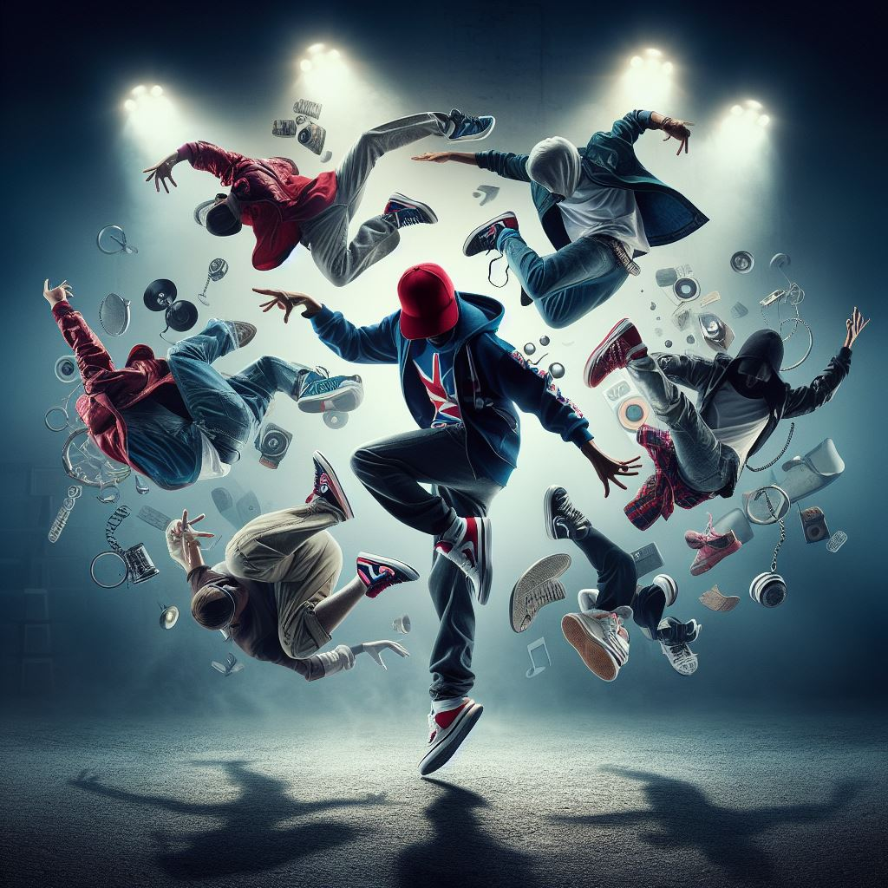
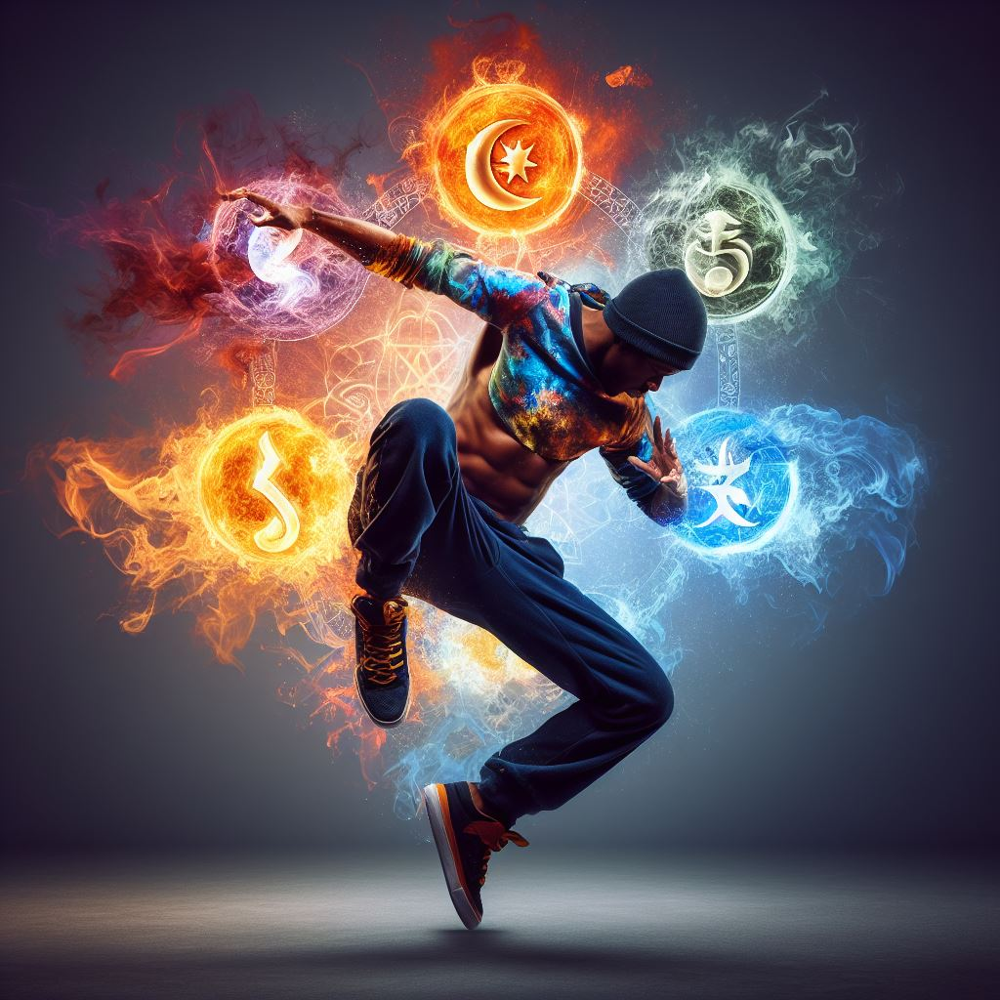
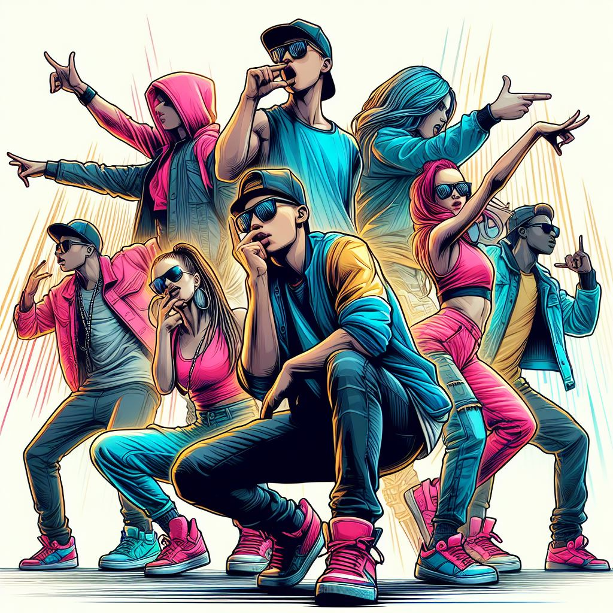

Breakdance, vaak eenvoudigweg 'breaking' of 'b-boying/b-girling'
genoemd, is een dynamische en acrobatische stijl van streetdance die
in de jaren zeventig opkwam in de Bronx, New York City. Het is een
van de vier belangrijkste elements van de hiphopcultuur, naast
rappen, dj'en en graffitikunst.
Popping
Bron: Bing Ai
Popping is een unieke en expressieve streetdancestijl die in de
jaren zeventig in Californië ontstond. vooral in de Afro-Amerikaanse
en Latinx-gemeenschappen. Popping is nauw verbonden met de bredere
hiphopcultuur en wordt vaak uitgevoerd naast andere urban
dansstijlen zoals Locking en breken.
House
Bron: Bing Ai
Housedance is een dynamische en expressieve straatdansstijl die in
de jaren tachtig ontstond in de underground clubscene van Chicago en
New York City. Het is nauw verbonden met housemuziek, een genre van
elektronische dansmuziek, en wordt gekenmerkt door zijn vloeiende en
ritmische bewegingen.
Locking

Bron: Bing Ai
Locking is een funk-geïnspireerde dansstijl die draait om
zelfexpressie, ritme en aanstekelijke energie. Dansers die locking
omarmen, worden "Lockers" genoemd en zijn gemakkelijk herkenbaar aan
hun scherpe, overdreven bewegingen en speelse, theatrale flair.
Krump

Bron: Bing Ai
Krump, afgeleid van het Engelse woord "crump" (een combinatie van
"crazy" en "jump"), is ontstaan in de straten van South Central Los
Angeles als een uitlaatklep voor jongeren om hun gevoelens van
woede, vreugde, verdriet en hoop te uiten. Deze opvallende dansstijl
is geëvolueerd tot een wereldwijde beweging die bekendstaat om zijn
kenmerkende.
Flexing/Bonebreaking
Bron: Bing Ai
Flexing omvat verschillende stijlen, waaronder 'Bonebreaking',
'Connecting' en meer. Elk stijl heeft zijn unieke bewegingen,
waardoor flexen een diverse en evoluerende kunst is. Flexing heeft
een sterk gem>eenschapsgevoel, waarbij dansers vaak crews vormen en
met elkaar concurreren in dansbattles. Het is een ruimte waar
creativiteit en innovatie worden uitgewisselt, en waar dansers de
grenzen verleggen op het gebied van wat er mogelijk is op vlak van
lichaamsbeweging.
Stepping

Bron: Bing Ai
Stepping is een ritmische vorm van percussieve dans die zijn
oorsprong vond in Afro-Amerikaanse studentenverenigingen. Het is een
boeiende samensmelting van muziek, beweging en teamwerk, gekenmerkt
door ingewikkeld voetenwerk, handgeklap en vocale gezangen. Stepping
is niet zomaar een dans; het is een krachtige uitdrukking van
eenheid en creativiteit.
C-Walking
Bron: https://twitter.com/wizetheproducer
C-Walking, ook wel 'Crip Walking' genoemd, is een dynamische en
ritmische dansstijl die zijn oorsprong vindt in de straten van Los
Angeles en vooral wordt geassocieerd met de hiphopcultuur van de
West Coast. Deze boeiende dansvorm wordt gekenmerkt door ingewikkeld
voetenwerk, soepele glijbewegingen en een onderscheidend gevoel voor
stijl.